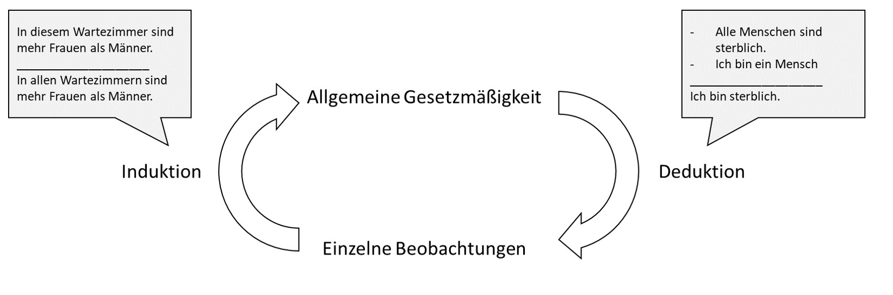
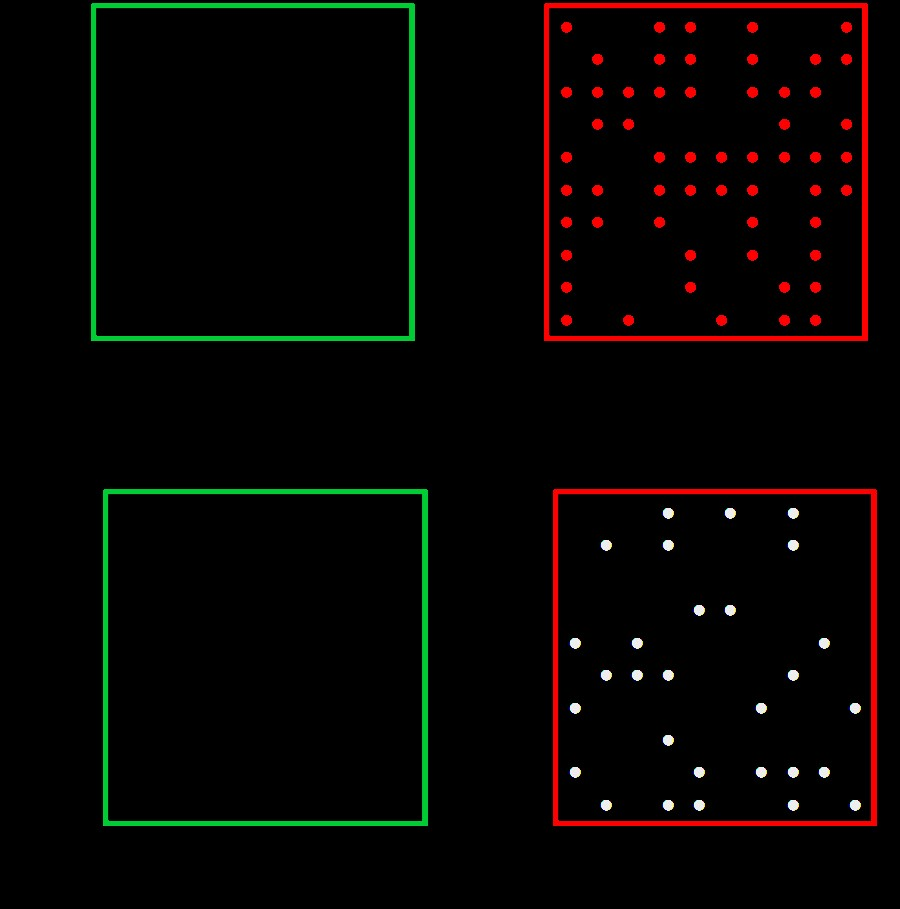
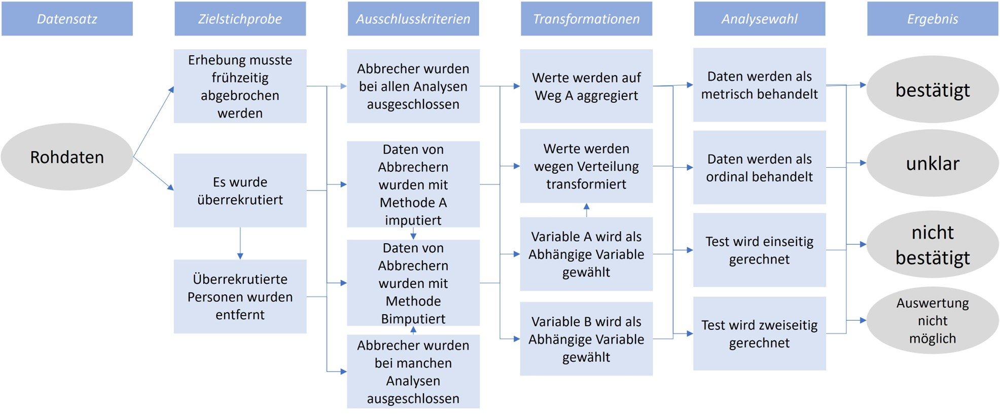

11 Probleme der wissenschaftlichen Methoden
Im Alltagsdenken herrscht noch oft der Mythos, dass Wissenschaft sich von Nicht-Wissenschaft durch die wissenschaftliche Methode unterscheide. Das ist falsch (e.g., Feyerabend, 1975/2002). Zwar unterscheidet sich wissenschaftliches Wissen von alltäglichem Wissen (und auch Religion) durch einen höheren Grad an Systematizität (REF Hoyningen-Huene, 2013), allerdings gibt es weder eine einzige noch eine persistente wissenschaftliche Methode. Methoden haben sich stattdessen über die Zeit gewandelt, und das ist auch gut so. Neue Technologien ermöglichen beispielsweise in der Physik hochpräzise Messungen mittels Elektronenlaser, in den Geschichtswissenschaften 3D-Scans von Artefakten, die sonst nur wenige sehen würden, oder in den Sozialwissenschaften Datenbanken mit freiwillig bereitgestellten und anonymisierten Chatverläufen (https://db.mocoda2.de/c/home).
So wie ein Hammer und andere Werkzeuge nicht per se gut oder schlecht sind, so sind Methoden nicht gut oder schlecht, nicht richtig oder falsch, sondern sie werden angemessen und korrekt verwendet oder missbraucht. Statt Missbrauch ist in den Sozialwissenschaften von fragwürdigen Forschungspraktiken (Questionable Research Practices), kurz QRP, die Rede. Sie erlauben Wissenschaftler*innen Befunde zu generieren, die sie wollen, statt Befunden, die es tatsächlich gibt. Im Folgenden werden verbreitete und oft angewandte (John et al., 2012) Techniken vorgestellt (für einen Überblick über die Forschung dazu in den letzten 50 Jahren, siehe auch Neoh et al., 2023).
11.0.1 Exploratorische versus konfirmatorische Forschung
Zum Verständnis der fragwürdigen Forschungspraktiken (QRP) ist eine wichtige forschungstechnische Unterscheidung unabdingbar: Wie bei einem Spaziergang kann eine wissenschaftliche Untersuchung erkundend oder zielgerichtet sein. Mal wird frei durch die Gegend spaziert und dabei neue Entdeckungen gemacht, mal ist das Ziel und die Route klar und im Vorhinein bestimmt. Im wissenschaftlichen Kontext ist die Rede von exploratorischer und konfirmatorischer Forschung. Bei der Exploration stehen höchstens die Forschungsfrage und grobe Züge der Methode fest, bei einem konfirmatorischen Test ist alles durchdacht: Vorgehen, mögliche Ergebnisse, sowie Erklärungsansätze für jedes mögliche Resultat. Es wird dann eine spezifizierte Hypothese mit der dazugehörigen Theorie bestätigt oder eben nicht. Kein Vorgehen ist dem anderen per se überlegen (siehe Abbildung Z). Üblicherweise beginnen Untersuchungen in einem bisher wenig erschlossenen Gebiet mit Exploration, während mehr vorhergehende Forschung mit klareren Erwartungen einhergeht. Es sei dazu gesagt, dass es sich hier um Extremtypen von Forschung handelt, die ein Spektrum bilden. Geisteswissenschaftlich erlauben außerdem erst beide Ansätze zusammen Erkenntnisgewinn. Im Rahmen des hermeneutischen Zirkel, (einfach gesagt “dem Kreis des Verstehens”, Abbildung Y) wird aus einzelnen Beobachtungen eine allgemeine Gesetzmäßigkeit formuliert (Induktion) und diese Gesetzmäßigkeit wird im Anschluss bei weiteren Einzelbeobachtungen geprüft (Deduktion).

Problematisch wird es, wenn exploratorische Forschung als konfirmatorische kommuniziert wird, also so getan wird, als hätte eine Einzelbeobachtung eine bereits formulierte Gesetzmäßigkeit bestätigt, statt sie bloß inspiriert. Diese Art Unlogik heißt Zirkelschluss: Die Gesetzmäßigkeit gilt wegen der Beobachtung. Und die Beobachtung entspricht der Gesetzmäßigkeit.
Abbildung Z
Skizziertes Vorgehen bei explorativer (a) versus konfirmatorischer (b) Forschung. Exploratives Vorgehen ist nicht zielgerichtet, die Richtung kann sich ändern, und ist manchmal mit unvorhergesehenen Ergebnissen verbunden. Konfirmatorisches Vorgehen bildet oft einen engen und kontrollierten Ausschnitt eines Sachverhaltes ab.
11.0.1.1 Methoden der Datengenerierung
Wissenschaftliche Disziplinen bedienen sich für gewöhnlich vieler verschiedener Methoden. Idealerweise sind Erkenntnisse unabhängig von der Methode, die zu ihrer Entdeckung geführt hat und verschiedene Methoden führen zur selben Erkenntnis. Typische sozialwissenschaftliche Methoden sind die Befragung mittels standardisiertem Fragebogen, Verhaltensbeobachtung mittels Kameraaufzeichnungen und anschließender Kodierung von Verhaltensweisen durch mehrere Personen, die den Untersuchungszweck nicht kennen, indirekte Methoden (Schimmack, 2019), bei welchen etwas anderes gefragt wird, als was gemessen werden soll, Verhaltensmessungen wie Blickrichtungsmessung (eye tracking), oder Simulationsstudien, mittels derer zum Beispiel Verkehrsflüsse auf Basis vorher festgelegter Prinzipien per Computer berechnet werden oder Panikattacken vorhergesagt werden (Robinaugh et al., 2021). Diese Methoden generieren fast immer Daten, also beispielsweise eine Tabelle, in der je Beobachtungseinheit (z.B. je Versuchsperson) in mehreren Spalten Daten festgehalten werden und diese Daten werden fast immer statistisch ausgewertet. Die Notwendigkeit einer solchen Auswertung ergibt sich daraus, dass die Beobachteten Gesetzmäßigkeiten keine absoluten Gesetze im Sinne von „alle männlichen Babys wiegen mehr als alle weiblichen Babys” sind, sondern statistische Regelmäßigkeiten im Sinne von „im Mittel wiegen kurz nach der Geburt männliche Babys ein paar hundert Gramm mehr als weibliche Babys, aber nicht jedes männliche Baby wiegt mehr als jedes weibliche Baby” sind (siehe Abbildung X).
ABBILDUNG X
Statistische Phänomen; männliche babys vs. Weibliche babys mit 2 Normalverteilungen generieren[LR1]
11.0.1.2 Statistische Signifikanz und Fehler erster Art
Eine der am weitesten verbreiteten Methoden in den Sozialwissenschaften (und auch darüber hinaus) ist Statistik, genauer Inferenzstatistik. Dabei wird von einer begrenzten Menge von Beobachtungen (z.B. ausgefüllte Fragebogen von 100 Personen) auf alle möglichen Beobachtungen (z.B. alle Menschen) verallgemeinert. Untersuchte Zusammenhänge sind selten eindeutig, es gibt aber häufig statistische Regelmäßigkeiten. Charakteristisch ist dabei ein gewisses Zufallselement. Wiegt man ein kürzlich geborenes männliches und weibliches Baby, dann ist die Wahrscheinlichkeit sehr hoch, dass das männliche Baby mehr wiegt. Es kommt aber auch häufig vor, dass das nicht der Fall ist. Ähnlich verhält es sich bei einer fairen Münze, also einer die im Mittel gleich häufig auf Kopf und auf Zahl landet: Dass sie bei insgesamt vier Würfen immer auf Kopf landet ist unwahrscheinlich, dass sie 1 oder 2 Mal auf Kopf landet, es kommt aber durch aus vor (nämlich in 12,5% aller Fälle, in denen eine faire Münze vier Mal hintereinander geworfen wird).
Inferenzstatistische Tests gehen nun davon aus, dass bei der Betrachtung eines statistischen Zusammenhanges (z.B. Geschlecht und Geburtsgewicht, Körpergewicht und Größe, Bildungsniveau der Eltern und Bildungsniveau der Kinder) „nur der Zufall am Werk ist” (e.g., Röseler & Schütz, 2022b). Unter der Annahme wird berechnet, wie häufig ein beobachteter Zusammenhang mit der beobachteten Stärke vorkommen würde, wenn eigentlich kein Zusammenhang vorliegen würde. Also zum Beispiel „dass eine faire Münze vier Mal auf Kopf landet, passiert in 12,5% aller Fälle”. Bei sechs Würfen wären es 1,5625%. Die Kunst des statistischen Schließens besteht nun darin, den Punkt zu finden, ab dem Forschende davon ausgehen, dass der Zufall nicht am Werk war, weil die berechnete Wahrscheinlichkeit so gering ist. Konventionell liegt dieser bei 5%, für neue Befunde manchmal bei 0,5% (Benjamin et al., 2018), und in besonders prekären Fällen noch niedriger. Fachtechnisch wird von einem Alpha-Niveau oder einem Signifikanzniveau gesprochen und die berechnete Wahrscheinlichkeit heißt p-Wert. P-Werte unter 5% werden statistisch signifikant oder auf dem 5%-Niveau signifikant bezeichnet. Forschende würden also sagen, dass eine Münze nicht fair ist, wenn sie sechs Mal hintereinander auf Kopf landet (sogar schon bei fünf Mal, was in 3,125% der Fälle vorkommt). Dabei nehmen sie in Kauf, dass sie, wenn die Münze eigentlich doch fair ist, in 5% aller Fälle falsche Schlüsse ziehen.
Auf der anderen Seite ist es durchaus möglich, dass eine Münze nicht fair ist, zum Beispiel in 60% der Fälle auf Kopf landet und in 40% auf Zahl. [LR2]

11.0.2 Freiheitsgrade[LR3] von Forschenden (Researchers’ Degrees of Freedom)
Vollständige Studien mehrfach durchzuführen ist sehr aufwändig. Obwohl es ein relativ sicherer Weg zu signifikanten P-Werten ist, gibt es weitaus sparsamere Lösungen. Die meisten Analysen sind um ein vielfaches komplexer als die oben beschriebene Münzwurfstudie. Betrachten wir den immer noch sehr einfachen Signifikanztest für einen Korrelationskoeffizienten. Der Koeffizient ist eine Zahl zwischen -1 und 1 und beschreibt die Art des Zusammenhanges zwischen zwei Variablen (z.B. Einkommen und Lebenszufriedenheit). 0 bedeutet, dass kein Zusammenhang vorliegt, positive Werte bedeuten, dass wenn die eine Variable hohe Werte hat, dann hat auch die andere hohe Werte, und negative Korrelationen bedeuten, dass wenn eine Variable hohe Werte hat, dann hat die andere Variable eher niedrige Werte. In Abbildung X sind verschiedene Korrelationen dargestellt.
Abbildung X: Verschiedene Zusammenhänge zwischen zwei Variablen und deren Korrelationskoeffizienten (simulierte Daten).
Obwohl es sich hierbei um einen sehr einfachen Test handelt, bringt er viele Entscheidungen mit sich. Selbst nach der Datenerhebung muss entschieden werden: Welche der befragten Personen werden für den Test verwendet? Sollen Personen ausgeschlossen werden und falls ja, warum (z.B. extreme Werte oder unplausible Werte)? Wie werden die Werte der Variablen berechnet? Welche Art der Korrelation soll verwendet werden (z.B. Bravais-Pearson, Kendall, oder Spearman)? Gibt es eine Erwartung der Richtung der Korrelation (Gerichtetheit der Hypothese)?
Diese Fragen entsprechen Freiheitsgraden – Forschende sind also dahingehend flexibel, welche Optionen sie wählen. Keine der Optionen ist per se allen anderen überlegen und jede Entscheidung lässt sich in einem gewissen Rahmen rechtfertigen. Das Problem dieser Flexibilität ist, dass die Ergebnisse von ihr abhängen und je nach den Entscheidungen kann das Ergebnis eine positive, negative, oder keine Korrelation bedeuten. Je komplexer die Untersuchung und das statistische Verfahren ist, desto größer ist auch die Flexibilität bei der Datenanalyse. An sich sind diese Freiheitsgrade nichts Schlechtes, problematisch wird es bloß dann, wenn nur diejenigen Ergebnisse dargestellt werden, die sich gut veröffentlichen lassen oder zu den Überzeugungen der Forschenden passen. Dieses Vorgehen heißt HARKing (hypothesizing after the results are known = Hypothesen aufstellen, nachdem die Ergebnisse bekannt sind) und stellt einen Zirkelschluss dar. Die Hypothese, die geprüft wurde, stammt aus den Daten, die sich natürlich bestätigen. Verschiedene Lösungswege erlauben auch die Reduktion oder komplette Auslöschung von Freiheitsgraden (z.B. Präregistrierung, siehe Kapitel XXX). Auch ist es möglich, das Vorgehen als explorativ, also nicht vorher durchdacht und vorbestimmt, zu kommunizieren.
Im Datenanalyseprozess wird die Analogie des „garden of forking paths” verwendet. In einem vereinfachten (!) Beispiel in Abbildung 4 haben wir 3x4x4x4 = 192 verschiedene Ergebnisse, die das gesamte Spektrum der Schlussfolgerungen abdecken werden – egal, ob unsere Hypothese stimmt oder nicht.

Demonstrationen des garden of forking paths existieren für verschiedenste Felder und wurden bereits für Evolutionsbiologie (Gould et al., 2023), Sozialpolitik (Breznau et al., 2022), Strukturgleichungsmodelle (REF[LR5] ), und Sprachanalysen (Coretta et al., 2023) überzeugend nachgewiesen.
11.0.3 Tippfehler
- Statcheck und Paper dazu
- Fehlerhafte Zitate: https://royalsocietypublishing.org/doi/10.1098/rspa.2020.0538
- Fehler beim notieren der Ergebnisse: Meta-Analysen bei Interventionen der klein. Psychologie: https://osf.io/preprints/psyarxiv/gvqrn/
11.0.4 P-Hacking
Der P-Wert bei statistischen Tests gibt an, wie hoch die Wahrscheinlichkeit für das beobachtete Muster ist, gegeben eines vorausgesetzten Musters. Für eine Korrelation heißt das: Wie wahrscheinlich ist es, eine Korrelation der vorgefundenen Höhe zu beobachten, wenn eigentlich kein Zusammenhang (also r = 0) zwischen den untersuchten Variablen besteht. Konkret könnte das heißen: Wie wahrscheinlich ist es, dass in meinem Datensatz von 100 Personen die Korrelation zwischen Intelligenz und Alter genau r(98) = .420 ist, wenn ich eigentlich davon ausgehen, dass beide Variablen nicht zusammenhängen. Die zusätzliche Annahme des fehlenden Zusammenhanges heißt Nullhypothese. Wenn das beobachtete Muster gegeben der Nullhypothese extrem unwahrscheinlich ist (oft unter 5%) wird von einem statistisch signifikanten Zusammenhang gesprochen. Wichtig ist dabei, dass Signifikanz (also „Bedeutsamkeit”) hier wirklich nur im statistischen Sinne zu verstehen ist. Die Frage, wie bedeutsam ein Befund für die Welt und das Leben ist, lässt sich mit Statistik in diesem Rahmen nicht beantworten. Weil P-Werte Wahrscheinlichkeiten sind, liegen sie zwischen 0 und 100%.
Unter den QRPs (fragwürdigen Forschungspraktiken) ist p-hacking eine weitere Kategorie, die wiederum selbst verschiedene Techniken beinhaltet. Mit p-hacking ist gemeint, dass Forschende ihre Freiheitsgrade nutzen, um den P-Wert „signifikant zu machen”, also unter 5% zu bringen. Eine oft fälschlicherweise gemachte Annahme zu P-Werten ist, dass hohe P-Werte für die Abwesenheit eines Zusammenhanges sprächen, oder dass P-Werte nur dann niedrig sind, wenn tatsächlich ein Zusammenhang vorliegt. Stattdessen sind P-Werte tendenziell klein, wenn ein Zusammenhang vorliegt, der auch mit der Menge der erhobenen Daten nachgewiesen werden kann. Wenn kein Zusammenhang vorliegt, sind P-Werte gleichverteilt, das heißt, alle P-Werte kommen gleich häufig vor. Im Sinne der oben genannten Definition ist a priori klar, dass bei 100 durchgeführten Studien tendenziell 5 einen signifikanten Zusammenhang aufweisen, wenn eigentlich keiner vorliegt. Diese Tatsache erlaubt diverse P-Hacking Methoden. Simonsohn et al. (2014) zeigten, die Wahrscheinlichkeit, ein signifikantes Ergebnis zu kriegen, wenn eigentlich kein Zusammenhang in den Daten herrscht, von 5% auf ca. 60% steigen kann. Abbildung X zeigt die Verteilung von P-Werten bei verschieden hoher Teststärke (bzw. Power: der Wahrscheinlichkeit, einen Zusammenhang einer bestimmten Größe zu finden, wenn es ihn tatsächlich gibt).
Abbildung X
P-Werte sind bei Abwesenheit von Unterschieden oder Zusammenhängen, also beim Gelten der Nullhypothese gleichverteilt. Je höher die statistische Teststärke (Power), desto weiter verschiebt sich die Verteilung in den Bereich statistischer Signifikanz.
{r} # P-Value distribution ---------------------------------------------------- layout(matrix(c(1,2,3), nrow = 1)) effects <- c(0, .1, .3) for (i in effects) { effect <- i n <- 100 pvalues <- (replicate(1000, t.test(rnorm(100), rnorm(100, i))$p.value)) power <- round(pwr::pwr.t.test(n = n, d = i, power = NULL, alternative = “two.sided”)$power, 3) hist(pvalues, xlab = “P-values”, main = paste(“Cohen’s d =”, i, “\nPower =”, power, sep = ““) , xlim = c(0, 1)) } layout(1)
Die Chance, signifikante P-Werte zu kriegen, ohne, dass die getestete Hypothese überhaupt stimmt, lässt sich durch „zerschneiden” der Stichprobe machen (z.B. werden nur Frauen analysiert), durch das Erheben zusätzlicher Daten („optional stopping”), oder durch die Verwendung mehrerer zentraler Variablen (zum Beispiel wird Intelligenz mit 3 verschiedenen Tests erfasst und alle werden einzeln mit Alter korreliert). Selbst das verändern kleiner Parameter in den statistischen Tests (z.B. Verwendung einer nicht-parametrischen Spearman Korrelation statt der Bravais-Pearson Korrelation) erhöhen die Chancen auf ein signifikantes Ergebnis (siehe Tabelle Y). Einige Formen des p-hacking lassen sich zum Beispiel hier ausprobieren: https://shinyapps.org/apps/p-hacker/ (Schönbrodt, 2016).
Tabelle Y
Wahrscheinlichkeit für ein signifikantes Ergebnis durch die Anwendung verschiedener P-Hacking Techniken
11.0.5 Selektives Berichten (Selective Reporting)
Im Rahmen der Planung einer sozialwissenschaftlichen Studie stellt sich oft die Frage, wie ein bestimmtes Konstrukt gemessen werden soll. Für Intelligenz, politischer Ansicht, Lebenszufriedenheit, und viele andere Variable gibt es nicht den Test sondern viele Maße, die teilweise gering miteinander zusammenhängen. Gleichzeitig sind die zu testenden Theorien meist vage und diktieren nicht, mit welchem Maß ein Konstrukt gemessen werden sollte. Theorien sind den Messmethoden gegenüber also oft agnostisch. Werden in einer Studie dann verschiedene Messmethoden für ein Konstrukt gewählt, müsste die Theorie über alle Tests gleichermaßen bestätigt werden. Falls das nicht der Fall ist, sollte die Theorie angepasst werden. Entgegen dieser Empfehlung und um die Chance der Publikation der Ergebnisse zu maximieren, berichten Forschende Ergebnisse oft selektiv. Statt aller Ergebnisse werden also nur die „passendsten” oder „spannendsten” berichtet. Wie oben im Thema P-Hacking und Freiheitsgrade von Forschenden klar geworden ist, führt das dazu, dass Zusammenhänge gefunden werden, die eigentlich nicht existieren.
Werden zum Beispiel drei verschiedene und unabhängige Maße zum Testen einer Hypothese verwendet steigt Wahrscheinlichkeit für mindestens ein signifikantes Ergebnis von 5% [LR6] auf 14%. Abbildung K zeigt,
Abbildung K
Selektives Berichten: Von den sechs geprüften Korrelationen ist nur eine signifikant. Alle gemeinsam sind nicht signifikant. Um die Ergebnisse zu veröffentlichen berichten Forschende nur den spannendsten Teil der Ergebnisse und verzerren damit das Bild.
XXX
11.0.6 Optionales Stoppen (Optional Stopping)
Führt man bei der Durchführung einer Studie nach jeder Beobachtung den Test erneut aus und betrachtet den P-Wert, dann gibt es zwei Möglichkeiten zu dessen Verlauf: Falls ein Zusammenhang zwischen den erhobenen Variablen besteht, wird der P-Wert konvergieren, also sich einem bestimmten Wert annähern, nämlich 0. Die Wahrscheinlichkeit für das beobachtete Ergebnis wird mit größerer Stichprobe immer geringer. Dass eine Münze nur auf “Kopf” landet ist ungewöhnlicher, wenn sie das 100 Mal getan hat, als wenn sie das 3 Mal tat. Falls kein Zusammenhang vorliegt, wird der P-Wert nicht wie oft erwartet gegen 1 gehen, sondern nicht konvergieren. Er wird dann chaotisch mal hoch und mal niedrig sein – und auch öfter mal signifikant. Diese Tatsache machen sich Forschende beim optionalen Stoppen zu Nutzen: Sie erheben so lange Daten, bis ihre Hypothese bestätigt wird. Das Problem besteht übrigens nicht für Effektstärkemaße wie zum Beispiel Korrelationen. Diese konvergieren je nach Größe ab ungefähr 250 Beobachtungen (Schönbrodt & Perugini, 2013).
Abbildung P
Konvergenz von P-Werten und Effektstärken je nach Effektgröße: Effektstärken (hier: Korrelationskoeffizienten) konvergieren bei großen Stichproben, P-Werte konvergieren nur, wenn die Korrelation nicht 0 ist.
{r setup, echo = FALSE} # P-Value Convergence ----------------------------------------------------- imax <- 5:5000 p0 <- NULL p1 <- NULL p2 <- NULL for (i in imax) { set.seed(42) ds0 <- MASS::mvrnorm(n = i, mu = c(0,0), Sigma = matrix(c(1, 0, 0, 1), nrow = 2)) ds1 <- MASS::mvrnorm(n = i, mu = c(0,0), Sigma = matrix(c(1, .05, .05, 1), nrow = 2)) ds2 <- MASS::mvrnorm(n = i, mu = c(0,0), Sigma = matrix(c(1, .1, .1, 1), nrow = 2)) p0 <- c(p0, cor.test(ds0[, 1], ds0[, 2])$p.value) p1 <- c(p1, cor.test(ds1[, 1], ds1[, 2])$p.value) p2 <- c(p2, cor.test(ds2[, 1], ds2[, 2])$p.value) } plot( y = p0, x = imax, type = “l”, col = “grey”, xlab = “Sample size”, ylab = “P-value”) lines(y = p1, x = imax, col = “orange”) lines(y = p2, x = imax, col = “red”) abline(h = .05, lty = 2) legend(“topright”, c(“r = 0”, “r = .05”, “r = .1”), col = c(“grey”, “orange”, “red”), lty = 1)
11.0.7 Darstellung kalibrierter Modelle als geplante Modelle (Overfitting)
Komplexe statistische Modelle haben viele Stellschrauben. Es ist möglich, die unzähligen Entscheidungen vor Anwendung eines Modells auf Daten zu treffen, für gewöhnlich werden aber andere Kalibrationen ausprobiert und eine andere als die geplante hat eine bessere Passung. Damit ist gemeint, dass beispielsweise bestimmte Variablen mit in ein Modell aufgenommen werden, um die Vorhersagekraft zu maximieren. Zu vielen Modellen gehören sogar verschiedene Algorithmen, die auf Basis festgelegter Regeln entscheiden, wie das Modell aussehen soll. Ein Modell wird also an ein Datenmuster angepasst. Wird das Vorgehen transparent offengelegt, ist das absolut in Ordnung. Problematisch wird es, wenn das beste gefundene Modell als geplantes Modell dargestellt wird. Das in den Daten vorliegende Muster beinhaltet in sozialwissenschaftlichen Untersuchungen nämlich fast immer auch ein Rauschen, also Schwankungen, die auf Messungenauigkeiten oder andere unbekannte Einflüsse zurückzuführen sind. Diese Einflüsse schwanken definitionsgemäß (in der psychologischen Testtheorie ist z.B. die Rede vom Error, einer unsystematischen Schwankung, die sich bei häufiger Messung herausmittelt). Bei zukünftigen Untersuchen wird das an die vergangenen Daten und das darin enthaltene Rauschen angepasste Modell dann notwendigerweise schlechter abschneiden, weil das Rauschen in den neuen Daten ein anderes ist. Man spricht dann von einem „überangepassten” Modell oder Overfitting.
11.0.8 Tendenz von Menschen, sich selbst zu bestätigen (Confirmation Bias)
Ein besonderes Problem wissenschaftlicher Methoden ist der Confirmation Bias. Das Phänomen ist in der wissenschaftlichen Literatur nicht klar definiert (REF[LR7] ), hier meine ich damit die Tendenz von Menschen (oder in diesem Kontext: Forschenden), diejenigen Muster zu finden, die sie erwarten. Der Confirmation Bias basiert auf wissenschaftlichen Befunden (Nickerson, 1998; Oswald & Grosjean, 2004), und wurde von den Wissenschaftler*innen auf sie selbst übertragen (Mynatt et al., 1977; Yu et al., 2014). Diese Gedanken führen nah an logischen Unsinnigkeiten und Paradoxa entlang, selbstironisch bemerkt zum Beispiel (Nickerson, 1998) die Möglichkeit, dass alle Befunde zu Confirmation Biases selbst nur Produkte desselben sein könnten, was die Existenz des Confirmation Biases dann wieder bestätigen würde (S. 211). Praktisch besteht die Gefahr, dass Wissenschaftler*innen nicht Wahrheiten herausfinden, sondern alles so drehen, dass ihre Vorahnungen bestätigt werden. Ludwik Fleck (1935/2015) geht in seiner Wissenschaftssoziologie, die die Grundlage für Thomas Kuhns Arbeit zu wissenschaftlichen Revolutionen (1970/1996) bildet, noch ein paar Schritte weiter: Er argumentiert für ein Modell des wissenschaftlichen Fortschritts, bei dem es nicht darum geht, der Wahrheit näher zu kommen, sondern nach bestem Wissen Probleme vor dem gesellschaftlichen Hintergrund zu verstehen. Das heißt nicht, dass es keine Wahrheit gibt, nur dass Wahrheit eben nicht bloß die Übereinstimmung von Aussagen mit Tatsachen ist. Statt dieser oft von Wissenschaftler*innen vertretenen Korrespondenztheorie von Wahrheit, findet sich bei Fleck eine Konsenstheorie von Wahrheit wieder: Die Übereinstimmung vieler Leute ist wichtig. Wissenschaftliche Tatsachen werden nicht von einzelnen Personen „entdeckt”, sondern von einem Kollektiv erschaffen. Der Confirmation Bias findet sich dabei so wieder, dass dem Konsens widersprechende Befunde ausgeblendet werden und auf den aktuellen Auffassungen so lange wie möglich beharrt wird. Wenngleich philosophische Wahrheitstheorien den Rahmen dieses Buches sprengen, sei darauf hingewiesen, dass keine der drei Wahrheitstheorien (Korrespondenz, Konsens, und Kohärenz) haltbar ist (Albert, 2010; Münchhausen Trilemma).
11.0.9 Datenfälschung
Die bisher diskutierten Praktiken werden oft als fragwürdig (questionable) dargestellt. Manche Wissenschaftler*innen halten das für ein Euphemismus, denn in der Verantwortung als Forscher*in sollte genügend Wissen vorliegen, um zu erkennen, dass die oben beschriebenen Techniken nicht wissenschaftlich sind und eindeutig nicht der Generierung von Wissen dienen. Sie behindern deutlich den wissenschaftlichen Fortschritt, gefährden das Vertrauen in Wissenschaft, und führen zu enorm hohen Kosten. Unglücklicherweise sind diese Problematiken vielen Wissenschaftler*innen heute immer noch nicht bekannt. „Das haben wir halt so gelernt und schon immer so gemacht” heißt es zum Beispiel. Dass bestimmte Studien sich nicht replizieren ließen, war teilweise schon vielen Personen bewusst, sie hielten es nur nicht für möglich, das im Scientific Record festzuhalten (z.B. http://daniellakens.blogspot.com/2020/11/why-i-care-about-replication-studies.html). Jedenfalls legt der Begriff der fragwürdigen Forschungspraktiken nahe, dass sich Forschende damit in einer Grauzone bewegen würden. Meiner Ansicht nach, ist das nur der Fall, da, wenn Forschende ihren Job verlieren würden, weil sie P-Hacking betrieben haben, nicht mehr viele Forschende übrig wären.
Anders ist es beim Fälschen und Manipulieren von Daten. Wie häufig Datenmanipulationen oder -fälschungen vorkommen ist ungewiss und Schätzungen sind schwierig. In einer Meta-Analyse von Umfragen zu dem Thema wurde geschätzt, dass zwischen 0,86 und 4,45% aller Wissenschaftler*innen zugaben, Daten manipuliert zu haben. 72% gaben an, fragwürdige Forschungspraktiken anzuwenden (Fanelli, 2009). Stroebe et al. (2012) stellten später Beispiele von Datenfälschung [LR8] zusammen und empfahlen Peer Review und Replikationen als Betrugs-Detektoren. Eine neuere und extrem umfangreiche Studie von Gopalakrishna et al. (2021) berichtete, dass 8,3% aller Befragten Daten manipuliert oder gefälscht hätten und 51,3% fragwürdige Forschungspraktiken angewandt hätten (Tabelle 2) und bestätigte den Ausmaß der Probleme. Je nach Disziplinen kommen weitere Probleme hinzu, wie zum Beispiel die Verwendung bereits veröffentlichter biomedizinischer Bilder, die in ungefähr 3,8% aller veröffentlichten Artikel angewandt wurde (Bik et al., 2016). Es wird davon ausgegangen, dass Datenfälschung nur in sehr seltenen Fällen aufgedeckt wird. Diejenigen Fälle, die ans Licht kamen, hatten die Zurückziehung (Retraction) der jeweiligen wissenschaftlichen Artikel zur Folge und oft Konsequenzen für die wissenschaftliche Karriere der Verantwortlichen. Retractionwatch.org verwaltet die weltweit größte Datenbank zu zurückgezogenen Artikeln (Stand Dezember 2023: 49.628 Artikel): http://retractiondatabase.org/.
Sehr düster ist dabei die Tatsache, dass Methoden zur Datenfälschung einerseits immer einfacher werden (e.g., Naddaf, 2023)[1] und Wissenschaftler*innen, die Fehler aufdecken, häufig verklagt werden. Das betrifft beispielsweise wurden die Autoren von Datacolada.org, die bereits häufiger Probleme aufgezeigt haben, von Francesca Gino für die Veröffentlichung verklagt (https://datacolada.org/109), woraufhin tausende Wissenschaftler*innen Gelder für die finanzielle Unterstützung des Gerichtsprozesses sammelten (https://www.gofundme.com/f/uhbka-support-data-coladas-legal-defense).
[1] Hussey (https://osf.io/preprints/psyarxiv/4kht8) und Sarstedt & Adler (https://www.sciencedirect.com/science/article/abs/pii/S0148296323003004) haben sarkastisch Methoden vorgeschlagen, direkt die berichteten Werte automatisiert fälschen zu lassen.
[LR1]https://www.thelancet.com/journals/lancet/article/PIIS0140-6736(14)60932-6/fulltext?version%3DprinterFriendly=&code=lancet-site
hier müssten statistiken sein
[LR2]Hier beta-fehler erklären und power
[LR3]Wicherts liste: https://www.ncbi.nlm.nih.gov/pmc/articles/PMC5122713/
[LR4]Abbildung passt nicht ganz zum Beispiel
[LR5]http://dx.doi.org/10.1111/jpim.12738
[LR6]binom.test(1, 3, .05)
[LR7]abschlussarbeit confirmation bias samira nickel
[LR8]Podcast zu dem Thema:
https://freakonomics.com/podcast/can-academic-fraud-be-stopped/